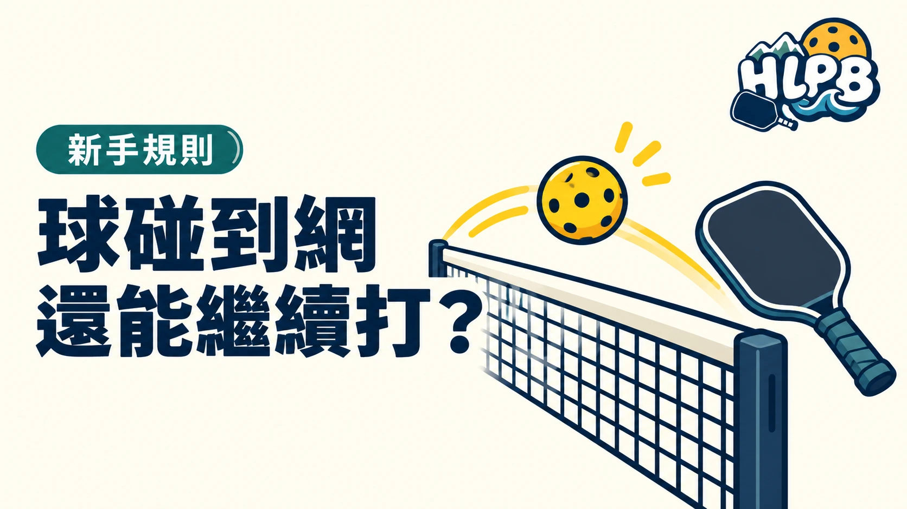

球碰到球網，不一定就是失誤。要分清楚球有沒有過網、落點是否符合規則，以及碰網的是球，還是球員或球拍。
發球與對打，判斷條件不同
| 項目 | 依 USA Pickleball 規則判斷 |
|---|---|
| 發球碰網後過網 | 仍須越過非截擊區，落在對角正確發球區。符合其餘發球規定即可繼續，不因碰網而重發。 |
| 發球落在非截擊區或其界線 | 發球失誤。 |
| 對打碰網後過網 | 若合法落在對方場內，仍可繼續對打。 |
| 球碰網後未過網 | 未完成合法回擊，失誤。 |
| 活球時球員、衣物或球拍碰網 | 屬於犯規，不能和球碰網混為一談。 |
發球碰網，要不要再發一次？
依 USA Pickleball 規則，合法的碰網發球繼續打，不是重發。2026 年規則 7.E 明定，發球可以碰網，但仍須越過非截擊區並落在正確發球區。
這篇整理的是一般碰球網情況，不包含碰網柱、網架或穿過網與網柱空隙等特殊判定。參賽時請先確認該賽事採用的規則。
來源：USA Pickleball 官方規則、2026 官方規則書、規則摘要。查證：2026/10/8。
最後查證：2026-10-08｜資料來源：USA Pickleball
返回文章列表